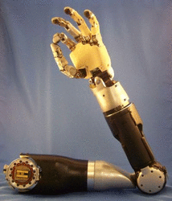

脳にインプラントしたセンサで操作するサイバネティックアーム、テスト段階に 39
ストーリー by hylom
鉄の旋律 部門より
鉄の旋律 部門より
あるAnonymous Coward 曰く、
米国防総省とジョンズ・ホプキンス大学応用物理学研究所の共同研究プロジェクトにて、脳にインプラントしたセンサで制御できる人工腕「Modular Prosthetic Limb」のテストが開始されたそうだ（本家/.、SingularityHub）このアームには接触センサが搭載されており、センサで感知した情報をインプラント経由で脳にフィードバックする機構も備えられているという。
すでに猿での実験は成功しており、今回ついに人間によるテストが行われるとのこと。また現実がSFの世界が一歩近づいてきました。

継ぎ目はどうなっての？ (スコア:3, 興味深い)